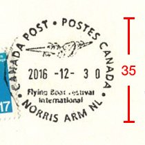

Norris Arm PO pictorial cancel
Flying Boat Festival International
- Status
- Active
- Run dates
- ? to present
- Design
- Flying Boat Festival International; flying boat
- Ink colour
- Black
- Designer
- Unknown
- Post office
- Norris Arm PO
165 Citizens Dr
Norris Arm, NL
A0G 3M0 - Subjects
- aircraft, transportation, aviation
Collect it by mail. Send your stamped covers, with a stamped return envelope, to the post office address above. How to collect pictorial cancels by mail · en français
 Botwood POMural
Botwood POMural Botwood POAircraft
Botwood POAircraft Twillingate POIceberg Capital of the World / Capitale mondiale de l
Twillingate POIceberg Capital of the World / Capitale mondiale de l Trinity POBoat
Trinity POBoat